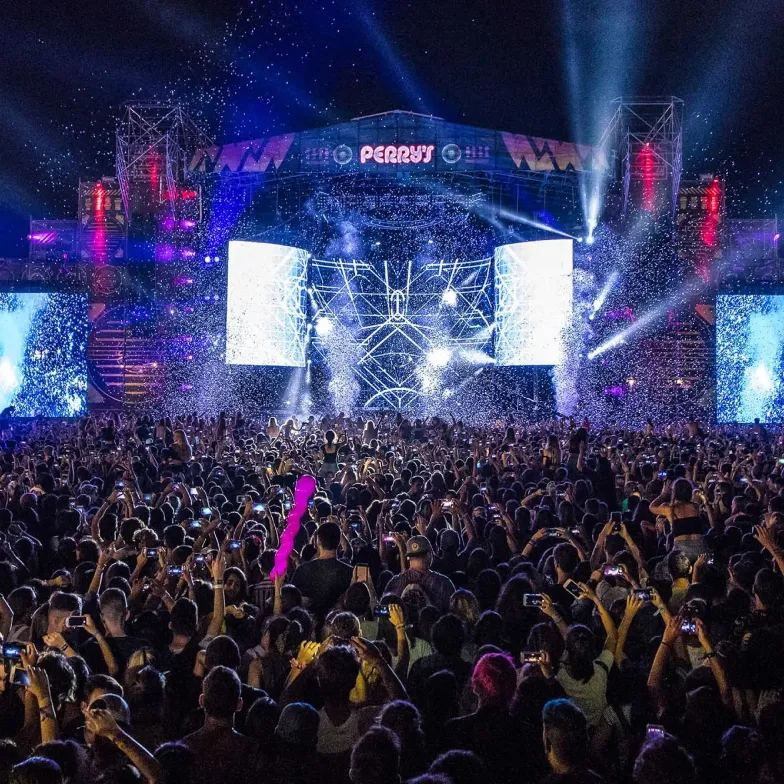

Festivals · Music
Lollapalooza Argentina 2027
- Dates
- –
- Venue
- Hipódromo de San Isidro
- Location
- San Isidro, Argentina
- Format
- In-person
- Category
- Music
- Industry
- Music festival
- Organiser
- DF Entertainment
- Official website
- https://www.lollapaloozaar.com/
About
3 days, 5 stages and 100+ acts (official site). Press (LOS40 Argentina) reported more than 300,000 people over the three days of 2026; not used. Argentina dates are local (Argentina time, UTC-3 all year, no daylight saving).
Topics: rock, pop, urban, electronic.
No organiser attendance figure found on the official pages checked (24 Nov 2026). Ranked by an estimated size tier 'very large' (about 100,000-1,000,000 attendees; our judgement from format, venue and scale, not an official number).